NarRTOS
ESP32-S3 için açık kaynak gömülü işletim sistemi. FreeRTOS çekirdeği üzerinde, LVGL 9 grafik kütüphanesiyle dokunmatik ekranlı akıllı cihazlar — giyilebilir cihazlar, izleme cihazları, kontrol panelleri — için eksiksiz bir çalışma ortamı.
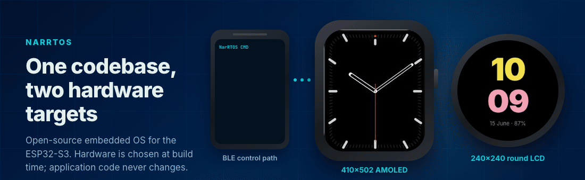
240 MHz ESP32-S3
uygulama
servisi
varyantı
konum
(AMOLED)
Çift çekirdekli mimari
Arayüz çizimi ile sensör ve servis işleri ayrı çekirdeklerde, çakışmadan.
Board varyant sistemi
410×502 AMOLED ve 240×240 yuvarlak LCD — tek kod tabanı, uygulama kodu değişmez.
GPS'siz konumlandırma
Çevre WiFi erişim noktalarının MAC adreslerinden yaklaşık ±19 m hassasiyet.
Kablosuz güncelleme
Cihaz kendini alandan günceller — A/B partisyon, fiziksel müdahale yok.
Hızlı başlangıç
Corezzle Imager masaüstü uygulaması NarRTOS'un hazır sürümünü karta yazar: kartı tak, kartını seç, düğmeye bas. Adım adım anlatım: Corezzle Imager ile Yükleme. Aşağıdaki adımlar yalnız kodu kendisi derleyip değiştirmek isteyenler için.
Bilgisayarınızda VS Code yüklü değilse önce onu kurun: VS Code Kurulumu. VS Code kurulu ama projeyi içinde nasıl indirip açacağınızı bilmiyorsanız NarRTOS için VS Code Kurulumu sayfası, aşağıdaki ilk komutu nereye yapıştıracağınızı adım adım gösterir. Sonra buraya dönün.
Bilgisayarınızda PlatformIO kuruluysa ve kart bağlıysa dört komut yeter:
git clone https://github.com/corezzle/NarRTOS-Wear.git
cd NarRTOS-Wear
pio run -e esp32s3_wearable -t upload
pio device monitorSırasıyla: projeyi indirir, klasörüne girer, derleyip karta yükler, cihazın çıktısını dinler.
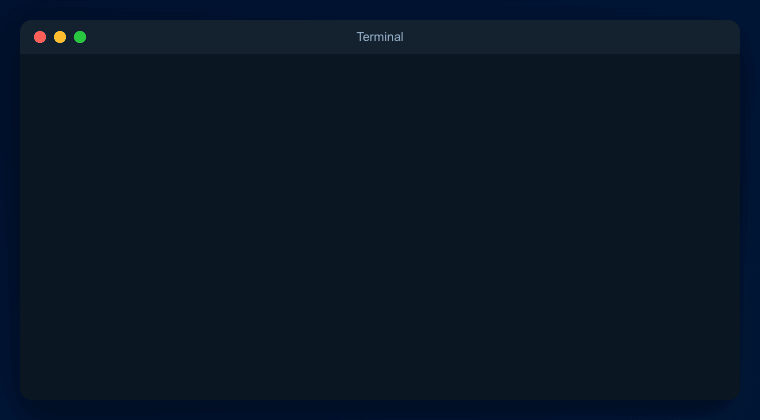
Bu dört komut, gerekli programların zaten kurulu olduğunu varsayar. Hiç yapmadıysanız Başlarken bölümünden gidin. Python ve PlatformIO kurulumundan kabloyu takmaya kadar her adım tek tek anlatılıyor.
Başlarken
Bu sayfa daha önce hiç gömülü yazılım derlememiş biri için yazıldı. Sırayla takip ederseniz elinizdeki karta NarRTOS kurulmuş olur. İlk seferinde 20-30 dakika sürer; bunun büyük kısmı bir kereye mahsus program kurulumlarıdır. İkinci seferde iki komutla bitirirsiniz.
Neye ihtiyacınız var
| Bir kart | Desteklenen ESP32-S3 kartlarından biri (bkz. Donanım ve Board Varyantları) |
| USB kablosu | Karta uygun uçta ve veri aktaran bir kablo |
| Bilgisayar | Windows, macOS ya da Linux; üçü de olur |
Telefon şarj kablolarının bir kısmı yalnız elektrik taşır, veri taşımaz. Böyle bir kabloyla kart bilgisayarda hiç görünmez ve "kart bozuk" sanırsınız. Kart görünmüyorsa denenmesi en kolay ve en sık işe yarayan şey kabloyu değiştirmektir.
1. Terminali açın
Bütün kurulum yazıyla komut girilen bir pencereden yapılır. Buna terminal denir.
- macOS: Spotlight'ı açın (⌘ + boşluk),
Terminalyazıp Enter - Windows: Başlat menüsüne
PowerShellyazıp Enter - Linux: Ctrl + Alt + T
Açılan siyah (ya da beyaz) pencereye komutları tek tek yazıp her birinin sonunda Enter'a basacaksınız. Bir komut çalışırken bekleyin, iş bitince satır başına geri döner.

Terminal yazın; ilk sonuç Terminal uygulamasıdır.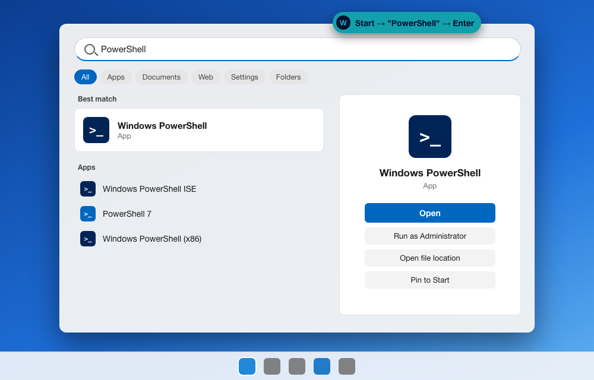
PowerShell yazın; ilk sonuç Windows PowerShell (çizim).2. Python kurulu mu, kontrol edin
Kullanacağımız derleme aracı Python ile yazılmış, o yüzden önce Python lazım. Terminale şunu yazın:
python3 --versionPython 3.9.6 gibi bir sürüm numarası görüyorsanız kurulu demektir, 3. adıma geçin. command not found benzeri bir hata görüyorsanız python.org/downloads adresinden indirip kurun.
Kurulum penceresinin en altındaki "Add Python to PATH" kutusunu mutlaka işaretleyin. İşaretlemezseniz Python kurulur ama terminal onu bulamaz ve sonraki adımlarda hata alırsınız.
Windows'ta komut python3 yerine python olabilir; ikisini de deneyin.
3. PlatformIO'yu kurun
PlatformIO, kaynak kodu karta yüklenebilir bir dosyaya çeviren araçtır. Derleyiciyi ve ESP32 araç zincirini kendisi indirir, siz ayrıca bir şey kurmazsınız.
pip3 install platformioKurulum birkaç dakika sürebilir. Bitince doğrulayın:
pio --versionPlatformIO Core, version 6.x.x gibi bir çıktı görmelisiniz.
pio: command not found diyorsaprogram kurulmuştur ama terminal nereye kurulduğunu bilmiyordur. Tam yoluyla çağırarak devam edebilirsiniz: macOS ve Linux'ta ~/.platformio/penv/bin/pio, Windows'ta %USERPROFILE%\.platformio\penv\Scripts\pio.exe. Bundan sonraki her komutta pio yerine bu yolu yazın.
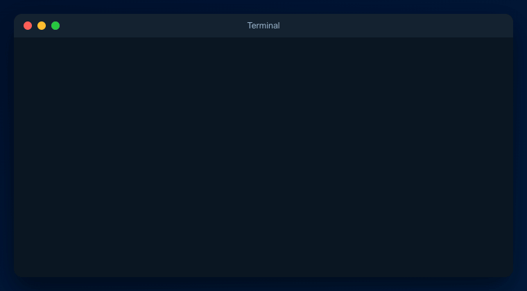
4. USB sürücüsünü kurun
Kartın üzerinde, USB'yi kartın anlayacağı sinyale çeviren küçük bir yonga vardır. Bilgisayarın bu yongayla konuşabilmesi için bir sürücü gerekir.
Çoğu bilgisayarda bu sürücü zaten vardır. Önce 6. adımı deneyin. Kart görünüyorsa bu adımı atlayın. Görünmüyorsa kartınızdaki yongaya göre sürücüyü kurun; en yaygın olanı CH340/CH341 ailesidir ve üreticinin sitesinden indirilebilir. Kurulumdan sonra bilgisayarı yeniden başlatın.
5. Proje dosyalarını indirin
git clone https://github.com/corezzle/NarRTOS-Wear.git
cd NarRTOS-Wearİlk satır projeyi bilgisayarınıza kopyalar, ikincisi o klasörün içine girer. Bundan sonraki bütün komutları bu klasörün içindeyken çalıştıracaksınız.
git: command not found hatası alırsanız git kurulu değildir. Kurmak istemiyorsanız GitLab sayfasındaki Code → Download source code → zip bağlantısından indirip klasörü açabilir, sonra terminalde o klasöre girebilirsiniz.
6. Kartı bağlayın ve göründüğünü doğrulayın
Kartı USB kablosuyla bilgisayara takın. Kartın üzerinde küçük bir ışık yanmalıdır.
Bilgisayarın kartı gördüğünü doğrulayın:
pio device listÇıktıda /dev/cu.usbserial-... (macOS), /dev/ttyUSB0 (Linux) ya da COM3 (Windows) gibi bir satır görmelisiniz. Bu, kartın adresidir.
Hiçbir şey çıkmıyorsa sırayla deneyin: başka bir USB kablosu (en sık sebep), başka bir USB portu, 4. adımdaki sürücü kurulumu.
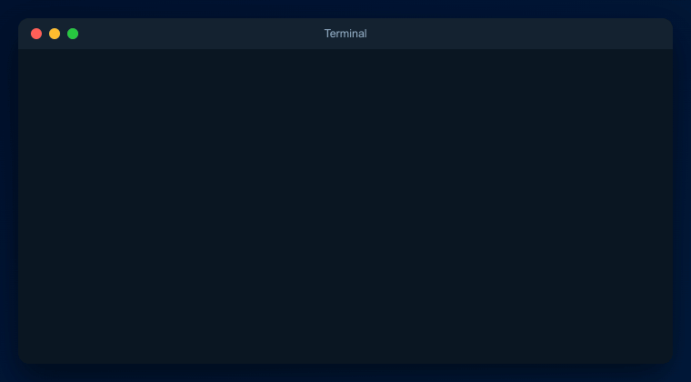
pio device list böyle bir satır verir. Adres (/dev/cu.usbserial-…, COM3) sizde farklı olur.7. Derleyin ve karta yükleyin
Tek komut hem derler hem yükler:
pio run -e esp32s3_wearable -t uploadİlk derleme uzun sürer. Derleyici ve kütüphaneler indirileceği için birkaç dakika alır. Ekranda uzun uzun satırlar akar, bu normaldir. Sonraki derlemeler, temizlemeden yapılırsa 15 saniye kadar sürer.
Sonunda SUCCESS yazısını görürseniz olmuştur; kart kendini yeniden başlatır ve NarRTOS açılır.
İleride kodda bir değişiklik yapıp yeniden yüklerken önce temizleyin, sonra derleyin:
pio run -e esp32s3_wearable -t clean
pio run -e esp32s3_wearable -t uploadİlk komut önceki derlemenin ürettiği dosyaları siler, ikincisi sıfırdan derleyip karta yükler. Böylece eski dosyalardan kaynaklanan "değişiklik cihaza yansımadı" sorunu yaşanmaz. Temiz derleme, ilk seferki gibi birkaç dakika sürer.
Kartınız 1.28 inç yuvarlak ekranlıysa komutun ortasındaki ortam adını değiştirin:
pio run -e esp32s3_lcd128 -t uploadHangi kartın hangi ada karşılık geldiği Donanım ve Board Varyantları sayfasındadır.
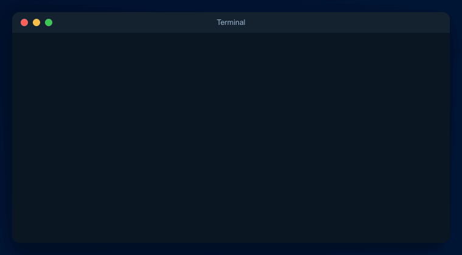
SUCCESS görünür ve kart yeniden başlar.8. Çalıştığını görün
Ekranda saat kadranı belirmelidir. Parmağınızı ekranda sağa kaydırırsanız uygulama menüsü açılır.
Cihazın içeride ne yaptığını görmek isterseniz seri monitörü açın:
pio device monitorAçılış kayıtları akmaya başlar. Monitör açıkken klavyeden help yazıp Enter'a basarsanız cihazı komutlarla sürebilirsiniz (bkz. Komut Arayüzü). Monitörden çıkmak için Ctrl + C.
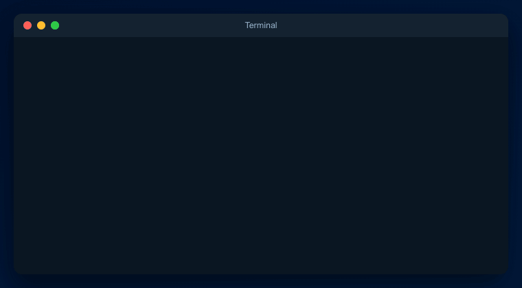
İlk denemede en sık takılınan yerler
| Gördüğünüz | Sebebi ve çözümü |
|---|---|
pio: command not found | PlatformIO kuruldu ama terminal bulamıyor; 3. adımdaki tam yolu kullanın |
pio device list boş çıkıyor | Büyük ihtimalle kablo yalnız şarj kablosudur; önce kabloyu değiştirin, sonra sürücüyü kurun |
| Yükleme sırasında checksum hatası | Bazı USB köprüleri yüksek hızda kararsızdır (bkz. Sorun Giderme) |
| Monitörde hiç yazı yok | Yanlış hız seçilmiş olabilir; pio device monitor komutu doğru hızı kendisi ayarlar |
| Ekran açık ama görüntü yok | Yanlış kart ortamıyla derlenmiş olabilir; 7. adımdaki ortam adını kontrol edin |
Listede olmayan bir sorunla karşılaşırsanız Sorun Giderme sayfasına bakın.
İlk açılışta ne olur?
- Sistem servisleri sırayla ayağa kalkar (NVS → I2C → PMIC → olay veriyolu → …)
- Ekran parlaklığı 0'dan yumuşak açılır (görsel "açılış" anı)
- Saat kadranı (WatchFace) yüklenir, dokunmatik ve butonlar aktiftir
- WiFi kullanıcı tercihi açıksa kayıtlı ağa otomatik bağlanır
Build ortamları
Yukarıdaki komutlarda geçen -e esp32s3_wearable kısmı, hangi karta derleneceğini söyler. Desteklenen ortamlar:
| Env | Board | Öne çıkan ayarlar |
|---|---|---|
esp32s3_wearable | ESP32-S3R8 + CO5300 AMOLED | 8 MB flash QIO, Octal PSRAM, upload 921600 |
esp32s3_lcd128 | 240×240 yuvarlak LCD kartı | 16 MB flash, Quad PSRAM, upload 460800, 240×240 |
Her ortamın kendi sdkconfig.<env> dosyası vardır (PSRAM tipi, flash boyutu gibi ESP-IDF ayarları). Partisyon düzeni A/B OTA'ya göre kurgulanmıştır: iki uygulama bölümü (app0/app1) + NVS + varlık (assets) bölümü.
Yapılandırma
Sistemin tek merkezi yapılandırma dosyası src/core/os_config.h: sürüm, pin haritası, görev çekirdeği/öncelikleri, ekran tamponu, dış servis adresleri.
Tüm tanımlar #ifndef korumalıdır, yani platformio.ini'den derleme bayrağıyla ezilebilir:
build_flags =
'-DOTA_BACKEND_HOST="http://192.168.1.50:3001"'Sonraki adımlar
- Sistemin nasıl çalıştığını anlamak → Mimari
- Kendi uygulamanızı yazmak → Uygulama Geliştirme
- Cihazı uzaktan sürmek → Komut Arayüzü
- Takıldıysanız → Sorun Giderme
Mimari
Katmanlar
+--------------------------------------------------------------+
| UYGULAMALAR (apps/) watchface, launcher, settings, ... |
+--------------------------------------------------------------+
| ÇEKİRDEK (core/) app_manager, event_bus, |
| button_handler, os_config |
+--------------------------------------------------------------+
| SERVİSLER (services/) ui, power, time, wifi, ble, audio, |
| sensor, ota, ... |
+--------------------------------------------------------------+
| SÜRÜCÜLER (drivers/) display, touch, power(PMIC), rtc, |
| imu, audio |
+--------------------------------------------------------------+
| FreeRTOS + ESP-IDF + LVGL 9 |
+--------------------------------------------------------------+Yukarı katman aşağıyı çağırır; aşağıdan yukarıya iletişim olay veriyolu ile olur. Servisler birbirine doğrudan bağımlı değildir — bu, tek bir servisin çıkarılıp değiştirilebilmesini sağlar.
Görev (Task) dağılımı
| Görev | Çekirdek | Öncelik | İş |
|---|---|---|---|
| UI görevi | Core 0 | 5 | LVGL render döngüsü (ui_service_tick) |
| Sensör görevi | Core 1 | 4 | IMU/adım sayar örnekleme, olay üretimi |
| Güç görevi | — | 6 | Batarya izleme, ekran uyku/uyandırma akışı |
| Servis görevleri | Core 1 | 3 | WiFi, OTA, telemetri, komut arayüzü gibi arka plan işleri |
Arayüz çizimi ile sensör/servis işlerinin farklı çekirdeklerde olması, ağır bir ağ işleminin arayüzü dondurmasını engeller.
LVGL eşzamanlılık modeli
LVGL thread-safe değildir. NarRTOS'ta LVGL mutex'inin sahibi ui_service'tir; UI görevinin dışından yapılacak her lv_* çağrısı kilit altında yapılmak zorundadır:
ui_service_lock(); // LVGL mutex'ini al
lv_label_set_text(lbl, "merhaba");
ui_service_unlock(); // bırak
// UI görevi kendi döngüsünde:
uint32_t next = ui_service_tick(); // mutex içinde lv_timer_handlerBir servis callback'inden arayüzü güncellemenin diğer güvenli yolu lv_async_call ile işi LVGL görevine devretmektir.
Boot (açılış) akışı
src/main.cpp içindeki app_main() sistemi katman katman ayağa kaldırır. Sıra önemlidir — her adım bir öncekinin kurduğu altyapıya dayanır:
1. nvs_flash_init() // kalıcı ayar deposu (NVS)
2. i2c_bus_init() // paylaşımlı I2C veriyolu
3. axp2101_init() // PMIC: güç raylarını aç (varsa)
4. event_bus_init() // pub/sub altyapısı
5. button_handler_init() // fiziksel butonlar
6. pcf85063_init() // RTC oku -> sistem saati
time_service_init() // NTP senkron daemon'u
7. wifi_service_init() // WiFi (kullanıcı tercihi NVS'ten okunur)
8. co5300_init() // ekran denetleyicisi (parlaklık 0'da başlar)
9. ui_service_init() // LVGL + display driver + mutex
10. ft3168_init() // dokunmatik -> LVGL input device
11. app_manager_init() // uygulama çatısı + uygulama kayıtları
12. alarm_service_init() // LVGL timer tabanlı zamanlayıcı
13. audio_service_init() // buzzer/ses
14. app_manager_launch(...) // ilk ekran devralınır
-> parlaklık ramp ile açılır (görsel "açılış" anı)
15. icm42670_init() // IMU
sensor_service_init() // sensör görevi (Core 1)
16. power_service_init() // güç/uyku yönetimi
17. ota_service_init() // güncelleme denetleyicisiHata toleransı ilkesi
Çevre birim init'leri (dokunmatik, RTC, IMU, PMIC) başarısız olsa bile sistem boot'a devam eder — hata loglanır, ilgili özellik devre dışı kalır. Cihaz, tek bir çevre biriminin arızasıyla açılamaz duruma düşmez.
Proje yapısı
NarRTOS-ESP32S3/
├── platformio.ini # build ortamları (env'ler)
├── partitions_custom.csv # A/B OTA partisyon düzeni
├── sdkconfig.* # ESP-IDF konfigürasyonları (env başına)
├── src/
│ ├── main.cpp # boot akışı (app_main)
│ ├── core/ # ÇEKİRDEK
│ │ ├── os_config.h # sürüm, pin haritası, görev ayarları
│ │ ├── app_manager.{h,cpp} # uygulama yaşam döngüsü
│ │ ├── event_bus.{h,cpp} # pub/sub olay veriyolu
│ │ └── button_handler.* # fiziksel buton yönetimi
│ ├── services/ # SERVİSLER
│ ├── drivers/ # SÜRÜCÜLER (display, touch, power, rtc, imu)
│ ├── hal/ # donanım soyutlama (I2C bus)
│ ├── apps/ # uygulama katmanı
│ └── assets/ fonts/ utils/
└── docs/ # dokümantasyon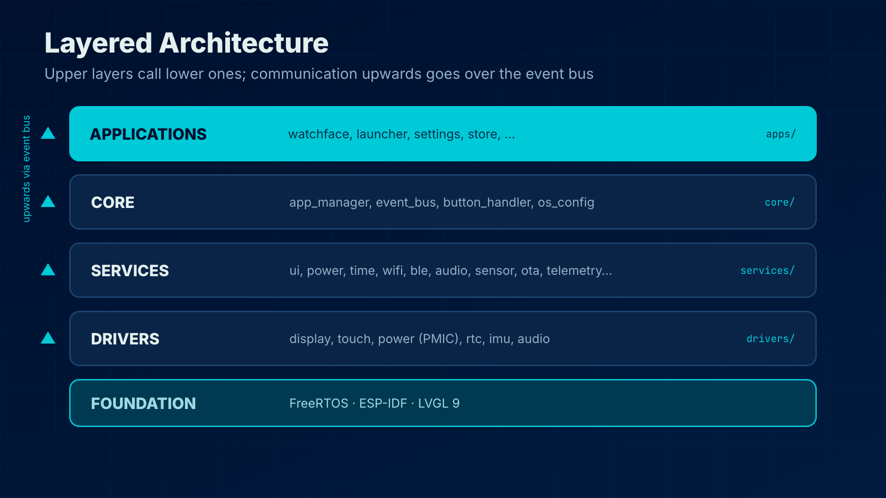

Çekirdek ve Servisler
Çekirdek bileşenler (src/core/)
event_bus — pub/sub olay veriyolu
Görevler arası iletişimin tek yolu. Her abone kendi FreeRTOS kuyruğuna sahiptir; yayınlanan olay tüm abone kuyruklarına dağıtılır ve abonenin kendi görev bağlamında işlenir (ISR-güvenli yayın).
// Olay grupları (event_bus.h):
EVENT_BATTERY_LEVEL / EVENT_CHARGING_STATE / EVENT_LOW_BATTERY // güç
EVENT_STEP_COUNT / EVENT_GESTURE_WRIST_UP / EVENT_SHAKE // sensör
EVENT_TOUCH_DOWN / EVENT_BTN_TOP / EVENT_BTN_BOTTOM // girdi
EVENT_TIME_UPDATED / EVENT_APP_SWITCH / EVENT_WEATHER_UPDATE // sistem
void event_bus_publish(event_type_t type, uint32_t data);Bir uygulamayı başka bir görevden açmanın thread-safe yolu da budur: event_bus_publish(EVENT_APP_SWITCH, APP_ID_WEATHER) → app_manager kendi zamanlayıcısında (LVGL görevi) uygulamayı açar.
app_manager — uygulama yaşam döngüsü
Her uygulama bir app_interface_t vtable'ı uygular; aynı anda yalnızca bir uygulama aktiftir (LVGL ekranının sahibi odur):
typedef struct {
void (*on_start)(lv_obj_t* screen); // ilk açılış: UI'yi bu ekrana kur
void (*on_resume)(void); // arka plandan öne gelme
void (*on_pause)(void); // başka uygulama devraldı
void (*on_stop)(void); // tamamen kapat, kaynakları bırak
bool (*on_event)(const os_event_t*);// aktif uygulamaya olay teslimi
const char* name; // log için isim
} app_interface_t;
void app_manager_register(app_id_t id, const app_interface_t* app);
void app_manager_launch(app_id_t id); // geçiş animasyonlu
void app_manager_back(void); // önceki uygulamaya dön
app_id_t app_manager_current_id(void);Ayrıca 50 ms'lik bir olay zamanlayıcısı çalıştırır: jestleri okur, olay kuyruklarını boşaltır ve aktif uygulamaya iletir.
button_handler
İki fiziksel butonu (üst/alt, aktif LOW) debounce edip kısa/uzun basış ayrımıyla EVENT_BTN_TOP / EVENT_BTN_BOTTOM olarak yayınlar.
Servis katmanı (src/services/)
| Servis | Görev |
|---|---|
ui_service | LVGL başlatma, render döngüsü, LVGL mutex sahipliği, dokunmatik girdi kaydı |
power_service | Batarya izleme, ekran uyku/uyandırma, aktivite takibi |
time_service | RTC'den saat okuma + WiFi varken NTP senkronu; EVENT_TIME_UPDATED yayını |
wifi_service | Bağlantı yönetimi, asenkron ağ taraması, kullanıcı tercihi (NVS'te kalıcı) |
ble_service | BLE altyapısı (NimBLE GATT sunucu) — bildirim köprüsü ve komut arayüzünün temeli |
audio_service | Buzzer/ses çıkışı (alarm ve bildirim sesleri) |
sensor_service | IMU örnekleme görevi (Core 1); adım/jest olayları üretir |
ota_service | Sürüm manifest'i sorgulama, imaj indirme, A/B güncelleme |
alarm_service | Zamanlayıcı/alarm çekirdeği (LVGL timer tabanlı) |
telemetry_service | Periyodik sağlık + WiFi tarama raporu (bkz. Telemetri ve Konumlandırma) |
command_service | USB/BLE komut arayüzü (bkz. Komut Arayüzü) |
ui_service API'si (en sık kullanılan)
void ui_service_init(void); // LVGL + display driver + mutex
void ui_service_register_touch(); // dokunmatiği LVGL'e bağla
uint32_t ui_service_tick(void); // UI görev döngüsü (mutex içinde
// lv_timer_handler)
void ui_service_lock(void); // görevler arası UI güncellemesi için
void ui_service_unlock(void);Yeni servis eklemek
Servisler opsiyoneldir ve genişletilebilir: services/ altına bir çift dosya ekleyip boot akışında (main.cpp) init çağırmak yeterlidir. Servis, sonucunu event bus'a yayınlar; kimse kimseyi doğrudan çağırmaz.
// services/my_service.cpp
esp_err_t my_service_init(void) {
xTaskCreatePinnedToCore(my_task, "my_svc", 4096, NULL, 3, NULL, 1 /* Core 1 */);
return ESP_OK;
}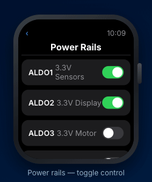
power_service, AXP2101 PMIC raylarını çalışma anında tek tek açıp kapatabilir. Ayarlardaki bu sayfa dokuz rayı ayrı anahtarlara bağlar; en altta saati tamamen kapatan Soft Power Off eylemi onay dialog'u arkasındadır.
Etiketler cihaz üstünde fiziksel testle doğrulanmıştır — örneğin ALDO1 ses değil sensör rayıdır (kapatınca dokunmatik ölür), ALDO2 ve DCDC2 ekranı besler.
Sistem 3.3V rayıdır; kapatılması ESP32'yi öldürür — bunu zaten Soft Power Off yapar, iki ayrı kontrol kafa karıştırıcı olurdu.
Donanım ve Board Varyantları
Desteklenen board'lar
| Özellik | esp32s3_wearable (varsayılan) | esp32s3_lcd128 | nar_esp32s3 |
|---|---|---|---|
| MCU | ESP32-S3R8 (çift çekirdek, 240 MHz) | ESP32-S3 (240×240 yuvarlak LCD kartı) | ESP32-S3R16V SiP (240 MHz, 16 MB PSRAM dahili) |
| Flash / PSRAM | 8 MB QIO / 8 MB Octal PSRAM | 16 MB / 2 MB Quad PSRAM | 32 MB / 16 MB Octal PSRAM |
| Ekran | CO5300 AMOLED, QSPI, 410×502 | GC9A01A LCD, SPI, 240×240 yuvarlak | CO5300 AMOLED, QSPI, 410×502 |
| Dokunmatik | FT3168 (I2C) | CST816S (I2C) | CST820 (I2C) |
| PMIC | AXP2101 | yok (3V3 doğrudan) | AXP2101 (0x47 lineer varyant) |
| RTC / IMU | PCF85063 / ICM42670 | board'a göre | PCF85063 (SiP içinde) / ICM42670 |
| Ek | — | — | ES8311/ES7210 ses, nRF9151 hücresel (GSM/LTE-M/NB-IoT + GNSS) |
NAR-ESP32S3: ses ve hücresel (nRF9151)
nar_esp32s3 varyantı AMOLED 2.06 kartla aynı ekran/dokunmatik ailesini kullanır ama ek olarak ses (ES8311 kodek + ES7210 mik ADC + NS4150B amfi) ve hücresel bağlantı taşır: üzerindeki "NAR9151" modülü aslında bir Nordic nRF9151 SiP'tir (LTE-M / NB-IoT + GNSS + gömülü SIM).
- AT arayüzü: nRF9151 UART ile ESP'ye bağlı (nRF P0.11 TX → GPIO43, P0.12 RX → GPIO44). AT için nRF'e Nordic SLM yazılımı yüklenir;
AT → OKdoğrulandı. (GPIO43/44 = ESP U0TXD/U0RXD; kullanmadan önce ROM'un UART0 ikincil çıkışı pinlerden koparılmalı.) - Modem firmware: SiP fabrikadan test görüntüsüyle (PTI) gelir ve şebeke/CFUN desteklemez; tam sürüm (
mfw_nrf91x1_2.0.4) yüklenir, sonraAT+CFUN=1 → OK. J-Link yoksa ESP, SWD köprüsü (pyocd) + seri fmfu aracı olarak kullanılır. - eSIM: gömülü ST4SIM (MFF2) 1GLOBAL profiliyle gelir; ICCID okunup operatör portalında aktive edilir (ST AN5740). Entegrasyon sürüyor.
- PMIC 0x47: NAR'ın AXP2101'i lineer şarj varyantıdır; LDO'lar kapalı açılır, I2C kilidi kör-yazma ile açılır, sürücü her açılışta rayları yazar.
Açılış donanım self-test'i
Soğuk açılışta (deep-sleep uyanışı hariç) OS, çevrebirimleri sırayla sınayıp seri monitöre bir checklist tablosu basar (selftest_service) — ekrana çizmez, launcher normal açılır. Test edilenler: PSRAM/flash, I2C taraması, PMIC, güç rayları, USB/pil, IMU, sıcaklık, RTC, dokunmatik çip, kodek, ekran, SD. NAR varyantında ek olarak ses loopback, Wi-Fi, titreşim motoru ve GSM/nRF9151 (AT → IMEI). Her satır PASS / FAIL / UYARI / ATLA döner; donanımı/derlemesi olmayan satırlar ATLA görünür. Aynı test motoru (selftest_ext) narrtos-board-selftest ve narrtos-lte-test ile birebir ortaktır.
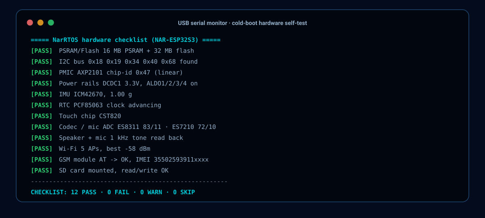
Pin haritası (varsayılan board)
Pin tanımları kodda tek yerde yaşar (core/os_config.h) ve tüm sürücüler buradan okur:
#define PIN_DISP_CS 12 // QSPI ekran
#define PIN_DISP_SCLK 11
#define PIN_DISP_D0 4 // D0..D3 = 4/5/6/7
#define PIN_DISP_RST 8
#define PIN_I2C_SDA 15 // paylaşımlı I2C: dokunmatik + PMIC + RTC + IMU
#define PIN_I2C_SCL 14
#define PIN_TOUCH_RST 9
#define PIN_TOUCH_INT 38
#define PIN_BTN_TOP 0 // aktif LOW (boot butonu)
#define PIN_BTN_BOTTOM 10
#define PIN_BUZZER 21
// SD (SDMMC): D0=3, CMD=1, CLK=2LCD varyantının pinleri ayrı başlıktadır: core/os_config_lcd128_pins.h — varyant derlemesinde otomatik seçilir.
Sürücüler (src/drivers/)
| Sürücü | Çip | Arayüz | Not |
|---|---|---|---|
display/co5300 | CO5300 AMOLED | QSPI | Varsayılan ekran; parlaklık panel komutuyla |
display/gc9a01_128 | GC9A01A LCD | SPI + DC | 1.28" varyant; parlaklık LEDC PWM (arka ışık) |
touch/ft3168 | FT3168 | I2C | Varsayılan dokunmatik |
touch/cst816s_128 | CST816S | I2C | 1.28" varyant dokunmatiği |
power/axp2101 | AXP2101 PMIC | I2C | Güç rayları, batarya ölçümü, şarj |
rtc/pcf85063 | PCF85063 | I2C | Gerçek zaman saati (güç kesilse de saat korunur) |
imu/icm42670 | ICM42670 | I2C | İvme/jiroskop — adım sayar ve jestler |
Varyant kalıbı: aynı sembol seti
Alternatif ekran sürücüleri, varsayılan sürücüyle birebir aynı fonksiyon imzalarını (co5300_*) dışa verir ve tamamı kendi derleme guard'ı içindedir:
// gc9a01_128_driver.cpp
#ifdef DISPLAY_VARIANT_LCD128 // yalnız LCD varyantında derlenir
... co5300_init(), co5300_lvgl_flush_cb(), ... // aynı isimler
#endif
// co5300_driver.cpp'deki guard, LCD build'ında onu boşaltır ->
// linker her ortamda TEK sembol seti görür; main.cpp / ui_service DEĞİŞMEZ.Yeni board'a taşıma (porting)
Gerçekte yapılmış bir taşımanın (1.28" yuvarlak LCD) izlediği yol:
1. Ekran sürücüsü — drivers/display/<yeni>_driver.cpp Varsayılan sürücünün dışa verdiği aynı fonksiyon setini uygula, dosyanın tamamını kendi guard'ına al (#ifdef DISPLAY_VARIANT_X). Çözünürlüğü sabit yazma — CO5300_H_RES / V_RES bayraklarından al.
2. Dokunmatik sürücüsü — drivers/touch/<yeni>_driver.cpp Aynı kalıp: varsayılan dokunmatik sürücüsünün imzaları + guard.
3. Pin haritası — core/os_config_<yeni>_pins.h os_config.h, board guard'ına göre doğru başlığı seçer.
4. Build ortamı — platformio.ini
[env:esp32s3_yeniboard]
extends = env:esp32s3_wearable ; ortak her şeyi miras al
board_build.flash_size = 16MB ; donanıma göre
board_build.psram_type = qio
upload_speed = 460800 ; USB köprüsü kararsızsa düşür
build_flags =
${env:esp32s3_wearable.build_flags}
-DCO5300_H_RES=240 -DCO5300_V_RES=240
-DDISPLAY_VARIANT_YENI=1
-DBOARD_VARIANT_YENI=15. ESP-IDF konfigürasyonu — sdkconfig.esp32s3_yeniboard PSRAM tipi (quad/octal), flash boyutu gibi çip-seviyesi ayarlar env'e özel dosyada.
6. UI ölçü sabitleri — bkz. Uygulama Geliştirme › Çözünürlük uyumu.
Kontrol listesi
- [ ] Ekran + dokunmatik sürücü çifti aynı sembol setiyle, kendi guard'ında
- [ ] Pin başlığı + platformio env + sdkconfig
- [ ] Her iki ortam da derleniyor; varsayılan build'ın binary'si DEĞİŞMEDİ
- [ ] Boot logları temiz; dokunmatik/ekran/servisler cihazda doğrulandı
Varyant eklemek, mevcut donanımın derlemesini asla etkilememelidir. Yeni kodun tamamı guard içinde olmalı, varsayılan dal orijinal değerlerini korumalıdır.
240×240 yuvarlak panelde aynı sistem
Aynı kod tabanı, yalnızca derleme zamanı seçimiyle yuvarlak GC9A01A panelde çalışır. Yerleşim değerleri firmware'den gelir: içerik sütunu 204 px (kenarlardan 18 px içeride), ana listede STEP 60, güç raylarında STEP 50, launcher hücresi 88×92.
204 px genişliğindeki satır ancak y ≈ 180'e kadar daire içinde kalır; altına inen satırlar kırpılır. Bu yüzden ana listede aynı anda iki satır tam görünür, güç rayları satırları 180 px'e daraltılır.
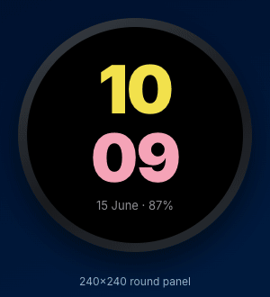
 Dijital kadranRubik Black 100
Dijital kadranRubik Black 100
 Ana ekranhücre 88×92, ikon 64
Ana ekranhücre 88×92, ikon 64
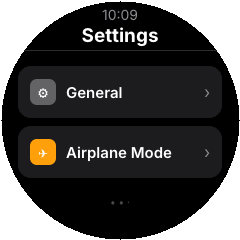
Ayarlariçerik 204 px, STEP 60 Güç raylarıSTEP 50
Güç raylarıSTEP 50
 Adım sayarhedef halkası
Adım sayarhedef halkası
 Hava durumuçoklu şehir
Hava durumuçoklu şehir
Uygulama Geliştirme
Sisteme yeni bir uygulama eklemek 4 adımdır. Aşağıdaki örnek "MyApp" adında boş bir uygulamayı uçtan uca ekler.
Adım 1 — Uygulama dosyalarını yaz: src/apps/myapp/
Her uygulama iki dosyadan oluşur ve dışarıya tek bir fonksiyon verir: *_get_interface() (yerleşik uygulamaların tamamı bu kalıptadır).
// src/apps/myapp/myapp_app.h
#pragma once
#include "../../core/app_manager.h"
const app_interface_t* myapp_get_interface(void);// src/apps/myapp/myapp_app.cpp
#include "myapp_app.h"
static void my_on_start(lv_obj_t* screen) {
lv_obj_t* lbl = lv_label_create(screen);
lv_label_set_text(lbl, "Merhaba NarRTOS");
lv_obj_center(lbl);
app_manager_enable_gestures(screen); // swipe'ların ekrana ulaşması için
}
static void my_on_stop(void) { /* on_start'ta ayrılan kaynakları bırak */ }
static bool my_on_event(const os_event_t* e) {
// örn. EVENT_TIME_UPDATED geldiğinde etiketi tazele
return false; // true = olayı tükettim
}
static const app_interface_t my_app = {
.on_start = my_on_start,
.on_resume = NULL, .on_pause = NULL,
.on_stop = my_on_stop,
.on_event = my_on_event,
.name = "myapp",
};
const app_interface_t* myapp_get_interface(void) { return &my_app; }Adım 2 — Kimlik tanımla: core/os_config.h
typedef enum {
APP_ID_WATCHFACE = 0,
...
APP_ID_STORE = 11,
APP_ID_MYAPP = 12, // <-- YENİ: her zaman APP_ID_COUNT'tan önce
APP_ID_COUNT
} app_id_t;Adım 3 — Merkezî kayda ekle: core/app_manager.cpp
Tüm uygulamalar tek yerde, app_manager_init() içinde kaydedilir — main.cpp'ye dokunulmaz:
#include "../apps/myapp/myapp_app.h"
void app_manager_init(void) {
...
app_manager_register(APP_ID_WATCHFACE, watchface_app_get_interface());
...
app_manager_register(APP_ID_MYAPP, myapp_get_interface()); // <-- YENİ
}Adım 4 — (İsteğe bağlı) Launcher'a kutucuk ekle
Kayıt, uygulamayı çalıştırılabilir yapar; menüde görünmesi için src/apps/launcher/launcher_app.cpp'deki grid tanımına bir kutucuk (isim + ikon sembolü + APP_ID) eklenir. Launcher'a eklemeden de uygulama başka bir yerden (buton olayı, alarm, başka uygulama, Komut Arayüzü) açılabilir:
app_manager_launch(APP_ID_MYAPP);Derle ve çalıştır
Kodda her değişiklikten sonra önce temizleyin, sonra derleyip yükleyin:
pio run -e esp32s3_wearable -t clean
pio run -e esp32s3_wearable -t upload # cihazda: Launcher'da yeni kutucukTemizlik önceki derlemenin kalıntılarını siler; ikinci komut sıfırdan derleyip karta yükler. Temiz derleme birkaç dakika sürer, karşılığında eski nesne dosyalarından kaynaklanan "değişiklik yansımadı" sorunları yaşanmaz.
Uyulması gereken kurallar
- UI yalnızca
on_start'a verilen ekrana kurulur — ekran nesnesini saklayıp başka ekranlara dokunulmaz. - Başka görevden UI güncellemesi
ui_service_lock/unlockile sarılır (bkz. Mimari › LVGL eşzamanlılık). on_stop,on_start'ta ayrılan her kaynağı bırakmalıdır (timer, buffer, servis aboneliği) — uygulamalar tekrar tekrar açılıp kapanır.- Servisleri doğrudan yoklamayın, olayları dinleyin. Gerçek örnek (WatchFace):
static bool on_event(const os_event_t* event)
{
if (!event) return false;
if (event->type == EVENT_WEATHER_UPDATE) {
// Hava durumu arka plan görevi yeni veri yayınladı -> ikonu yenile.
// UI task bağlamındayız; doğrudan render güvenli.
if (s_activity_icon_cloud) {
weather_icon_render(s_activity_icon_cloud,
(weather_condition_t)event->data);
}
return true; // olay tüketildi
}
return false; // ilgilenmiyorum -> diğer dinleyicilere geçsin
}Çözünürlük uyumu (ölçü sabitleri kalıbı)
Uygulamaların iki çözünürlükte de (410×502 / 240×240) yeniden yazılmadan çalışmasını sağlayan kalıp: her uygulama ekrana bağlı ölçülerini tek bir varyant-korumalı sabit bloğunda tanımlar; UI kodu yalnızca bu sabitleri kullanır.
// launcher_app.cpp — ölçü sabitleri (tek blok, uygulamanın başında)
#ifdef BOARD_VARIANT_LCD128 // 240×240 yuvarlak LCD
#define L_SCR_W 240
#define L_CELL_W 88 // grid hücresi
#define L_CELL_H 92
#define L_ICON 64 // uygulama ikonu
#define L_SYM_FONT (&lv_font_montserrat_28)
#else // 410×502 AMOLED (varsayılan)
#define L_SCR_W 410
#define L_CELL_W 120
#define L_CELL_H 128
#define L_ICON 95
#define L_SYM_FONT (&lv_font_montserrat_36)
#endif
// UI kodu her yerde SADECE sabiti kullanır:
lv_obj_set_size(cell, L_CELL_W, L_CELL_H);Basit yükseklik/konum farkları için satır-içi hali de kullanılır:
#ifdef BOARD_VARIANT_LCD128
#define VIEW_SCR_H 240
#else
#define VIEW_SCR_H 502
#endif
lv_obj_set_size(sbox, LV_PCT(100), VIEW_SCR_H);Varsayılan (AMOLED) dal, #else tarafında orijinal değerlerin birebir aynısını taşır — böylece varyant eklemek, preprocessor sonrası varsayılan build'ın binary'sini tek byte değiştirmez. Yeni bir çözünürlük desteklemek = her uygulamanın sabit bloğuna bir dal eklemek; UI mantığına dokunulmaz.
Küçük ekran için pratik notlar
- İkon/daire oranını koru (ör. 40 px dairede 24 px sembol → 26 px dairede 16 px).
- Liste satır aralığını (
STEP) satır yüksekliği + ~8 px olarak kur; AMOLED değerini olduğu gibi taşımak devasa boşluklar üretir. - Yuvarlak ekranda üst/alt kenarlarda görünür genişlik daralır — başlık ve saat gibi öğeleri yan yana değil, alt alta yerleştirmek gerekebilir.
Kullanıcı Arayüzü
NarRTOS'un kullanıcı etkileşimi üç girdiye dayanır: dokunmatik jestler, iki fiziksel buton ve hareket (bilek kaldırma).
Jest (swipe) sistemi
Dokunmatik denetleyici donanımsal jest verisi göndermediği için swipe algılama yazılımda yapılır: dokunma okuma geri çağrısı parmak izini takip edip yön çıkarır ve global g_swipe_dir değişkenine yazar (-1 sol, +1 sağ, -2 yukarı, +2 aşağı). app_manager'ın 50 ms'lik olay zamanlayıcısı bu değeri okuyup navigasyona çevirir.
| Bağlam | Jest | Davranış |
|---|---|---|
| Saat kadranı | Sağa swipe | Launcher'ı açar (uygulama menüsü) |
| Saat kadranı | Sola / yukarı / aşağı | Bilinçli olarak atanmamıştır (kazara ekran değişimini önler) |
| Diğer tüm ekranlar | Sağa veya sola swipe | Geri — tek elle kullanım için iki yön de geri çalışır |
| Üst kenar (y ≤ 40 px) | Aşağı çekme | Control Center'ı açar |
| Control Center açıkken | Yukarı/sağa/sola swipe veya karartılmış zemine dokunma | Paneli kapatır |
Kod karşılığı (app_manager.cpp, sadeleştirilmiş):
static void check_swipe(void) // 50 ms'lik olay zamanlayıcısında
{
if (ui_service_is_swipe_locked()) { g_swipe_dir = 0; return; }
if (g_swipe_dir == 0) return;
int8_t dir = g_swipe_dir; g_swipe_dir = 0; // okundu, sıfırla
if (control_center_is_open()) { control_center_close(); return; }
switch (dir) {
case -1: // sağa swipe
if (s_current == APP_ID_WATCHFACE)
app_manager_launch(APP_ID_LAUNCHER); // kadran -> menü
else
app_manager_back(); // diğerlerinde: geri
break;
case +1: // sola swipe: kadranda no-op, diğerlerinde geri
if (s_current != APP_ID_WATCHFACE) app_manager_back();
break;
}
}Swipe kilidi: Sürükleme tabanlı widget'lar (ör. parlaklık çubuğu) sürükleme boyunca swipe navigasyonunu kilitler (ui_service_is_swipe_locked) — slider kullanırken yanlışlıkla "geri" tetiklenmez.
Control Center
Üstten aşağı çekilen hızlı ayarlar paneli. Aktif uygulamanın üzerine çizilir (lv_layer_top()) — uygulama ekranı bozulmaz. İçerik: WiFi | Bluetooth | Uçak modu | El feneri hızlı anahtarları.
Fiziksel butonlar
| Buton | Pin | Rol |
|---|---|---|
| Üst buton | GPIO 0 | Uyandırma / ana ekrana dönüş (kısa-uzun basış olay veriyoluyla uygulamaya iletilir) |
| Alt buton | GPIO 10 | Uyandırma / uygulamaya özgü işlev |
Güç durumları ve uyandırma
power_service dört durumlu bir makine işletir; her kullanıcı etkileşimi sayacı sıfırlar:
ACTIVE --(30 sn hareketsizlik)--> DIM --(5 sn)--> DISPLAY_OFF
^ |
+---- dokunma / buton / bilek kaldırma (WOM) ------+
DISPLAY_OFF --(10 dk hareketsizlik)--> DEEP_SLEEP
(derin uykudan uyandırma: buton, RTC alarmı)Uyandırma kaynakları loglarda ayırt edilir (dokunma, üst/alt buton, bilek kaldırma) — sahte uyandırmaların teşhisi için. Bilek kaldırma, IMU'nun hareket-ile-uyandırma (WOM) kesmesiyle gelir.
Yerleşik uygulamalar
| Uygulama | APP_ID | Ne yapar / kullandığı servisler |
|---|---|---|
| WatchFace | 0 | Varsayılan ana ekran: saat, tarih, batarya, adım. Olaylarla canlı güncellenir |
| StepCounter | 1 | Adım sayar ekranı — sensor_service'in IMU verisi |
| Settings | 2 | Çok sayfalı ayarlar: WiFi (tarama + el yazısı/klavye şifre girişi), ekran, OTA, sistem bilgisi |
| Launcher | 3 | 3×3 grid uygulama menüsü (kadrandan sağa swipe) |
| HeartRate | 5 | İskelet (gelecek uygulama) |
| Weather | 6 | Şehir + sıcaklık + UV/rüzgâr/nem halkaları; weather_service (WiFi gerekir) |
| Timer | 7 | İskelet (gelecek uygulama) |
| Notifications | 8 | Telefon bildirimleri (BLE/ANCS): liste + detay + dismiss |
| Gallery | 9 | Cihaz depolamasındaki görseller; WiFi üzerinden yükleme sayfası |
| Alarm | 10 | Alarm listesi + kurma ekranı; alarm_service + audio_service |
| Store | 11 | Uygulama kataloğu (metadata-only mimari) |
Uygulamalar ekran ölçülerini sabit yazmaz; ölçü sabitleri board varyantına göre seçilir. Bkz. Uygulama Geliştirme › Çözünürlük uyumu.
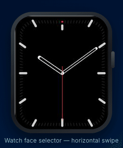
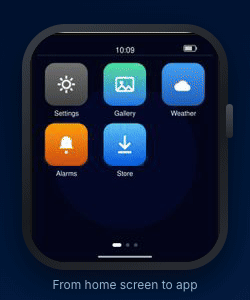
 Analog kadranFACE_ANALOG
Analog kadranFACE_ANALOG
 Dijital kadranFACE_DIGITAL
Dijital kadranFACE_DIGITAL
 Activity kadranıFACE_ACTIVITY
Activity kadranıFACE_ACTIVITY
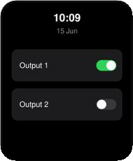
Çıkış kontrolüFACE_IO_CONTROL Ana ekran3×3 launcher
Ana ekran3×3 launcher
 Adım sayargünlük hedef halkası
Adım sayargünlük hedef halkası
 Hava durumuçoklu şehir, canlı veri
Hava durumuçoklu şehir, canlı veri
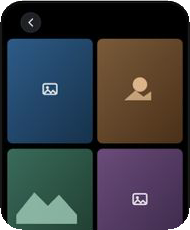
Galerifotoğraf tarayıcı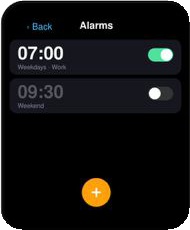
Alarmlarkurma ekranı BildirimlerANCS listesi
BildirimlerANCS listesi
 Bildirim detayıgövde + kapat
Bildirim detayıgövde + kapat
 MağazaApps sekmesi
MağazaApps sekmesi
 Mağaza detayıuygulama kartı
Mağaza detayıuygulama kartı
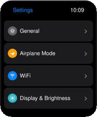
Ayarlarkök menü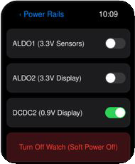
Güç rayları9 toggle + kapat Yazılım güncellemeOTA akışı
Yazılım güncellemeOTA akışı
Komut Arayüzü
Cihaz, dışarıdan metin komutlarıyla yönetilebilir — test, demo, otomasyon ve uzaktan kontrol için. Tek bir taşıyıcı-bağımsız parser çekirdeği iki kanaldan beslenir; komutlar yeni ekran kodu içermez, mevcut iç API'lere köprüdür.
USB seri (UART0 RX) ──┐ yanıtlar reply-sink ile geri döner:
BLE "NarRTOS CMD" ──┴─► parser ──► USB'den gelen -> seriye (printf)
BLE'den gelen -> telefona (notify)Komut seti
| Komut | Etkisi |
|---|---|
help / info | Komut listesi / durum JSON'u (sürüm, uptime, heap, wifi, aktif uygulama) |
app launch <isim|id> | Uygulama açar (EVENT_APP_SWITCH ile — LVGL görevinde, thread-safe) |
app back / current / list | Geri • aktif uygulama • isim→id tablosu |
swipe left|right|up|down | Jest enjeksiyonu — ekranlar arası gezinme |
brightness 0-255 | Ekran parlaklığı |
set wifi|bt on|off | WiFi tercihi (NVS, kalıcı) + bağlan/kopar • BLE advertise/kes |
get wifi|bt / toggle wifi|bt | Durum okuma / tersine çevirme |
set rail <isim> on|off / get rails | AXP2101 güç rayları (aldo1-4, dcdc2-4, bldo1-2) |
wake / reboot | Ekranı uyandır / yeniden başlat |
set rail yalnızca PMIC'li board'da çalışır; PMIC yoksa komut dürüst bir hata döner. DCDC1 (sistem rayı) bilinçli olarak listede yoktur — kapatmak cihazı öldürür.
USB kullanımı
Seri terminale (115200) satır yazın:
pio device monitor
# sonra:
help
app launch weather
brightness 30Yanıtlar [cmd] önekiyle döner:
> app launch weather
[cmd] OK: launch weather (id=6)
> brightness 30
[cmd] OK: brightness=30
> get wifi
[cmd] OK: wifi connected=yes pref=on⚠ macOS + CH34x köprüsü: port her açılışta cihaza reset atar. Portu bir kez açıp aynı oturumda çalışın; her komut için yeniden bağlanmayın.
Telefon kullanımı (BLE — özel uygulama gerekmez)
GATT servisi "NarRTOS CMD":
Service : 4E010063-6D64-004E-4152-52544F530001
RX : ...530002 (Write / WriteNoRsp) <- UTF-8 komut satırı yaz
TX : ...530003 (Notify) <- yanıtlar buraya düşernRF Connect ile:
- "NarRTOS Watch"a bağlan
...530003characteristic'inde Notify'ı aç (yanıtları görmek için)...530002'ye UTF-8 text olarak komut yaz:app launch weather- Saatte uygulama açılır; yanıt notify'da düşer
BLE'de USB'deki port-reset sorunu yoktur; cihaz koldayken bile komut gönderilebilir.
⚠ set bt off komutunu telefondan gönderirseniz kendi bağlantınızı da kesersiniz. Eşleştirme bozulursa (iOS "Peer removed pairing information"): telefonda cihazı unut → yeniden bağlan.
Mimari notlar
- Thread-safety: Uygulama açma doğrudan
app_manager_launchçağırmaz —EVENT_APP_SWITCHyayınlar,app_managerkendi LVGL görevinde açar. Geri işlemilv_async_callile LVGL görevine devredilir. - Ekran uyandırma: Komut öncesi
power_service_user_activityçağrılır; ekran kapalıyken geçiş animasyonu tamamlanmaz. - Eşzamanlılık: USB ve BLE aynı anda komut gönderebilir — parser mutex ile serileşir.
- Dosyalar:
services/command_service.{h,cpp}(çekirdek + USB),services/ble_cmd_service.{h,cpp}(GATT taşıyıcı).
Yeni taşıyıcı eklemek
Satırı command_service_exec_ex(line, reply_fn, ctx)'e besleyen küçük bir adaptör yeterlidir — parser ve komut seti aynen çalışır (ör. HTTP endpoint, MQTT konusu).
Telemetri, Konum ve Sunucu
Telemetri ve konumlandırma, kendi ayrı sayfalarında ayrıntılı olarak anlatılıyor — animasyonlu akış şemaları, etkileşimli örnekler ve panel ekran görüntüleriyle.
Telemetri ve Konumlandırma →
60 saniyelik rapor döngüsü, BSSID taraması, GPS'siz ±19 m konum çözümü, veri dürüstlüğü kuralı ve maliyet koruması.
Sunucu tarafıSunucu Kurulumu →
Backend'i sıfırdan kurun: veritabanı ve şema, ortam değişkenleri, konum sağlayıcısı, mesaj kuyrukları ve admin paneli.

OTA Güncelleme
NarRTOS cihazları yeni yazılımı kablosuz olarak indirip kendilerini güncelleyebilir — fiziksel müdahale gerekmez.
Akış
1. Manifest sorgusu -> sunucudaki güncel sürüm nedir?
2. Karşılaştırma -> OS_VERSION_CODE'dan büyük mü?
3. İndirme -> yeni imaj WiFi üzerinden yedek bölüme yazılır
4. Doğrulama -> bütünlük kontrolü
5. Yeniden başlatma -> yeni sürüm aktif olurKullanıcı arayüzü: Ayarlar → General → Software Updates. Otomatik kontrol açıksa arka planda periyodik olarak manifest sorgulanır.
Sürüm karşılaştırması
Sürüm bilgisi tek bir tam sayıya indirgenir — string ayrıştırma tuzaklarına düşmemek için:
#define OS_VERSION_MAJOR 1
#define OS_VERSION_MINOR 4
#define OS_VERSION_PATCH 81
#define OS_VERSION_STR "1.4.81"
// OS_VERSION_CODE = MAJOR*10000 + MINOR*100 + PATCH -> 10481String karşılaştırmada "0.10" < "0.2" çıkar — integer karşılaştırma bu hatayı önler.
Manifest formatı
{
"version": "1.5.0",
"version_code": 10500,
"url": "https://sunucu/firmware/narrtos-1.5.0.bin",
"size": 2480000,
"notes": "Hata düzeltmeleri ve yeni özellikler"
}Manifest adresi derleme bayrağıyla verilir; cihaz kimliği ve mevcut sürüm sorgu parametresi olarak eklenir — sunucu uygun sürümü seçebilir ya da cihaz zaten güncelse 204 No Content döndürebilir.
A/B partisyon düzeni
app0 → çalışan sürüm
app1 → yeni imaj buraya yazılırGüncelleme başarısız olursa ya da yeni sürüm açılışta çökerse cihaz eski sürüme döner (anti-crash-loop koruması). Partisyon tablosu partitions_custom.csv içinde tanımlıdır: iki uygulama bölümü + NVS + varlık (assets) bölümü.
Yapılandırma
# platformio.ini
build_flags =
'-DOTA_BACKEND_HOST="https://sunucunuz.example.com"'os_config.h içindeki tüm OTA adresleri #ifndef korumalıdır; env üzerinden ezilebilir.
Güncelleme yaşam döngüsü telemetrisi
Cihaz, güncelleme olaylarını (başladı / başarılı / başarısız) sunucuya raporlar. Bu best-effort'tur: sunucuya erişilemezse OTA akışı bozulmaz, olay sessizce atlanır.
Güvenlik notu
Üretim ortamında manifest ve imaj dağıtımı HTTPS üzerinden yapılmalıdır. Geliştirme sırasında HTTP'ye izin veren yapılandırma kullanılır; sertifika sabitleme (pinning) yol haritasındadır.
Yazılım güncellemeAyarlar → Software UpdateCihaz manifest'i sorgular, yeni sürüm varsa boyutuyla birlikte gösterir. İndirme yedek partisyona yazılır; doğrulama başarılıysa bir sonraki açılışta yeni imaj devreye girer.

Sorun Giderme
Derleme ve yükleme
| Belirti | Neden / Çözüm |
|---|---|
Yükleme sırasında checksum hatası (Failed to write to target RAM) | Bazı USB-seri köprüler 921600'de kararsızdır → upload_speed'i 460800'e düşürün |
pio bulunamıyor | PlatformIO Core kurulu değil: pip install platformio |
| Port bulunamıyor | USB-seri sürücüsü (ör. CH34x) kurulu mu? ls /dev/cu.* ile kontrol edin |
| Yanlış board derleniyor | -e <env> parametresini verin: pio run -e esp32s3_lcd128 |
| Yaptığım değişiklik cihaza yansımıyor | Önce temizleyin, sonra derleyin: pio run -e esp32s3_wearable -t clean, ardından aynı komutun -t upload hali |
Seri monitör
| Belirti | Neden / Çözüm |
|---|---|
| Monitörde hiç çıktı yok (0 bayt) | Okuma aracı DTR/RTS hatlarını yanlış sürüyor olabilir → portu DTR=false ile açıp RTS ile reset darbesi verin |
| Her bağlanışta cihaz yeniden başlıyor | macOS + CH34x köprüsünün bilinen davranışı. Portu bir kez açıp aynı oturumda çalışın |
| Loglar bozuk/anlamsız | Baud hızı 115200 olmalı |
DTR/RTS sorunu için çalışan Python örneği:
import serial, time
ser = serial.Serial()
ser.port, ser.baudrate, ser.timeout = "/dev/cu.usbserial-XXXX", 115200, 1
ser.dtr = False; ser.rts = False # açılışta hatları ASSERT ETME
ser.open()
ser.setDTR(False) # GPIO0 = high -> normal boot
ser.setRTS(True); time.sleep(0.15) # EN = low -> reset'te tut
ser.setRTS(False) # bırak -> cihaz app'i boot eder
while True:
print(ser.readline().decode("utf-8", "replace"), end="")Açılış (boot)
| Belirti | Neden / Çözüm |
|---|---|
| Boot'ta dokunmatik I2C hatası | Normal olabilir — cihaz geç hazırlanıyor; sürücü yine de kaydedilir ve ilk dokunuşla toparlar |
| PMIC bulunamadı uyarısı | PMIC'siz board'da beklenen davranış; sistem boot'a devam eder |
| RTC bulunamadı | Dahili saat kullanılır; NTP ile senkronlanır |
| Ekran açık ama görüntü yok | Parlaklık ramp'i başlamadan hata olmuş olabilir; boot loglarında ekran sürücüsü ve ui_service satırlarına bakın |
Çevre birim init'leri başarısız olsa bile sistem boot'a devam eder. Tek bir çevre biriminin arızası cihazı açılamaz duruma düşürmez.
WiFi
| Belirti | Neden / Çözüm |
|---|---|
| Açılışta bağlanmıyor | Kullanıcı tercihi NVS'te OFF olabilir (bilinçli davranış) — Ayarlar'dan açılır |
Sürekli retry 1/5 … 5/5 | Ağ menzil dışında ya da şifre yanlış; Ayarlar → WiFi'dan yeniden bağlanın |
| Tarama sırasında bağlantı kopuyor | Beklenen — aktif tarama bağlantıyı kısa süre böler (bkz. Telemetri ve Konumlandırma) |
Telemetri akışı durdu
Kontrol sırası:
- Sunucunun IP'si değişti mi? En sık neden. Geliştirme makinesinin DHCP IP'si değişince cihaz ölü adrese POST atar. Kalıcı çözüm: router'da statik DHCP rezervasyonu. Geçici çözüm: derleme bayrağındaki
OTA_BACKEND_HOST'u güncelleyip yeniden flash. - Sunucu ayakta mı?
curl http://<ip>:3001/api/wear-os/health - Cihaz açık ve WiFi'da mı? Seri log kontrolü.
Komut arayüzü
| Belirti | Neden / Çözüm |
|---|---|
| Komut yazıyorum, yanıt yok | Cihaz boot ortasında olabilir — CmdSvc: init OK satırını bekleyin |
app current → id=-1 döndü | Uygulama geçişi tamamlanmadı; ekran kapalıysa animasyon bitmez (komut öncesi wake gönderin) |
| BLE'de "Peer removed pairing information" | Bond uyuşmazlığı → telefonda cihazı unut, uygulamayı yeniden başlat, tekrar bağlan |
set rail → NOT_SUPPORTED | Board'da PMIC yok — beklenen dürüst hata |
UI / düzen
| Belirti | Neden / Çözüm |
|---|---|
| Küçük ekranda ikonlar orantısız | İkon/daire oranını koruyun (40 px dairede 24 px sembol → 26 px dairede 16 px) |
| Satır araları aşırı açık | Liste STEP değeri satır yüksekliği + ~8 px olmalı; büyük ekran değerini taşımayın |
| Başlık ile saat çakışıyor | Yuvarlak ekranda üst kenarda görünür genişlik dardır — öğeleri yan yana değil alt alta yerleştirin |
| Metin taşıyor / kırpılıyor | Ölçü sabitlerini varyant bloğunda tanımlayın (bkz. Uygulama Geliştirme) |
Yardım alma
Sorun devam ediyorsa: seri boot logunu, kullandığınız build ortamını (-e ...) ve board modelini ekleyerek issue açın.